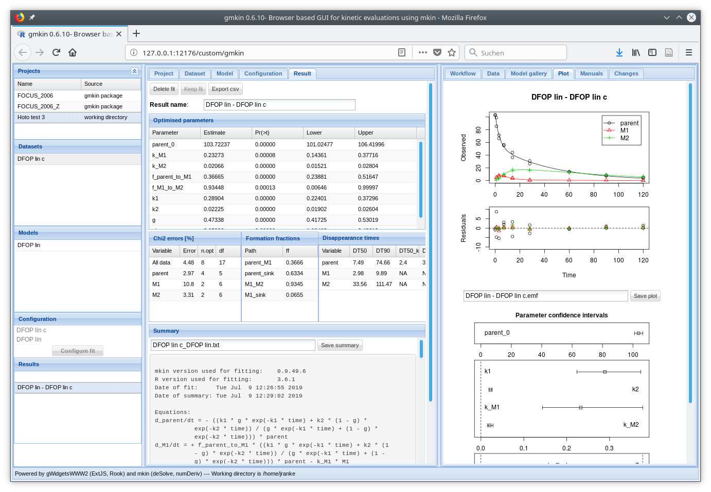

For running gmkin you need a system running a recent version of R (version 3.1.0 or later), the gWidgesWWW2 package, the gmkin package and a web browser (Firefox/Iceweasel and Chrome work for me) with JavaScript enabled.
It should be possible to run gmkin on most laptop or desktop computers running Linux, Mac OS X, Windows XP or Windows 7. It is frequently checked under Linux and Windows 7.
To view the complete set of widgets in the browser window without resizing anything, it needs a screen space of 1366x740 pixels.
Please refer to CRAN for installation instructions and binary packages. If you are on Windows, please consult the FAQ for Windows, especially the entries “How do I install R for Windows?”, “How do I run it?”.
If you would like to upgrade your R installation, please refer to the respective FAQ entry.
Windows and Linux users running R 3.1.0 or later can make use of the package repository on R-Forge. Before installing gmkin, you should update your R packages already installed, e.g. by starting R, and pasting the command
update.packages()or similar, depending on your R installation.
For installing gmkin or upgrading to the latest released version, please use the command
install.packages("gmkin", repos = c("http://r-forge.r-project.org", getOption("repos")))If you have not set your CRAN mirror yet, you may have to select one from the list that appears.
The above command temporarily adds the R-Forge repository to your package sources. It should pull the gmkin package and its dependencies, notably the gWidgetsWWW2 package which is not available from the CRAN archive (see below). Mac users that have the necessary development files installed can probably install from the source files in this repository (not tested).
In a previous version of this README I have described how to permanently add the R-Forge repository to your options. However, I noticed this has unwanted side effects, so I do not recommend it any longer. Therefore, you may want to revert such changes to your R startup options.
The latest changes to gmkin are recorded in the NEWS file, more details can be found in the commit history.

Without further preparation, you can start the GUI by starting R and pasting the following commands into the R terminal (R console on Windows):
require(gmkin)
gmkin()You may also want to adapt the browser that R starts (using e.g. options(browser="/usr/bin/firefox") on linux, or setting the default browser on Windows).
For a complete overview of the functionality of the gmkin graphical user interface please refer to the manual available at the gmkin documentation website.
In case you would like to see the documentation of the underlying mkin package, please refer to its documentation website.
The R package gWidgetsWWW2 is not available on CRAN because it contains path names with more then 100 characters in the JavaScript files which limits its portability. Also, it attaches some R objects to the search path, which is, in its current form, not fully in line with the CRAN package policy. It is not a widely used library for creating graphical user interfaces and is not supported by a commercial company. However it makes it possible to create a reasonably complex user interface by just writing R code, and is therefore used by gmkin.
Users of the devtools package can also install gWidgetsWWW2 and gmkin directly from the respective github repositories:
require(devtools)
install_github("jverzani/gWidgetsWWW2", quick = TRUE)
install_github("jranke/gmkin", quick = TRUE)Installing gWidgetsWWW2 in this way yields a lot of warnings concerning overly long path names (see Notes on gWidgetsWWW2 above). Using quick = TRUE skips docs, multiple-architecture builds, demos, and vignettes, to make installation as fast and painless as possible.
You can put the commands
require(gmkin)
gmkin()
while (TRUE) {
Sys.sleep(10)
}into an R script (e.g. under C:\Users\<your username>\AppData\Roaming\gmkin_start.R), and create a Windows shortcut, e.g. on the Desktop, with the target "C:\Program Files\R\R-3.x.y\bin\R.exe" --slave -f c:\Users\<your username>\AppData\Roaming\gmkin_start.R, where R.x.y is the version of R that you would like to use with gmkin. This will start a non-interactive R console that runs the gmkin GUI. In the properties dialogue of the shortcut, you can also set the working directory in which it starts gmkin. Thanks to Jonas Klein of the Umweltbundesamt for the trick with using Sys.sleep in a while loop and for suggesting the AppData directory for the start script.
Financial support, feedback and suggestions by the German Federal Environmental Agency (Umweltbundesamt) in two projects in 2014 and 2015 was crucial for reaching version 0.6.3 in November 2015 and is gratefully acknowledged. In particular, Stefan Meinecke contributed with a lot of user feedback and suggestions for improvement in that time.
GPL